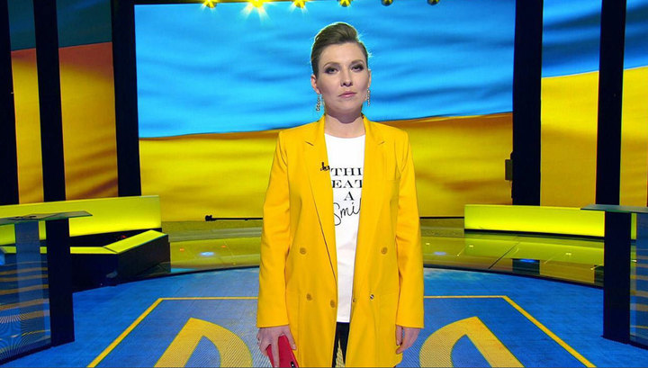

«Железная кукла путинского ТВ»

Ольга Владимировна Скабеева — телеведущая, журналистка, лицо государственного канала «Россия-1». Выросла в провинциальном Волжском, дошла до главного прайм-тайма страны. Красный диплом журфака СПбГУ, стипендия Фонда Потанина, «Золотое перо» — и в итоге прозвище «железная кукла путинского ТВ». История стремительного карьерного взлёта и репутационного обвала.
Родилась 11 декабря 1984 года в небольшом городе Волжский Волгоградской области. Отец — инженер-строитель, мать — архитектор. С детства жёсткий распорядок: 6:30 подъём, 9 уроков в частной российско-американской школе с религиозным уклоном, рисование, гимнастика.
Окончила школу с золотой медалью. Ещё в 9-м классе объявила родителям — инженеру и архитектору — что станет журналисткой. Первый опыт получила в местной бесплатной газете «Неделя города» и «Волжской правде», брала интервью у гастролирующих звёзд. Поступила на журфак СПбГУ.
Ещё студенткой стала стипендиатом Фонда Потанина. Получила «Золотое перо России» в номинации «Перспектива года» и премию правительства Санкт-Петербурга. Параллельно начала работу на ВГТРК — к 2006 году создала более 200 репортажей и аналитических материалов.
Окончила СПбГУ с отличием. Перешла в федеральную редакцию ВГТРК — программы «Вести» и «Вести недели». Получила награду конкурса «Профессия — репортёр» в номинации «Журналистское расследование». Начала формировать фирменный «прокурорско-обличительный» стиль с металлическим голосом.
На репортаже с «Марша против подлецов» в январе 2013-го с «металлом в глазах и железом в голосе» разоблачала «убогость» протестующих. Это видео разошлось по Рунету, прозвище прилипло навсегда. В апреле того же года вышла замуж за телеведущего ВГТРК Евгения Попова — брак второй для обоих.
14 января 2014 года у Скабеевой и Попова родился сын Захар. В том же году активно освещала события на Украине, занимая жёсткую провластную позицию. Вела авторскую программу «Вести.doc» на «России-1», специализируясь на разоблачениях оппозиции.
С 12 сентября 2016 года совместно с Поповым запустила ток-шоу «60 минут» на «России-1». В том же году пыталась взять интервью у немецкого журналиста ARD Хайо Зеппельта — тот выставил её силой из гостиничного номера. Снимала его личные вещи для «превью», игнорировала запрет.
«60 минут» победило на ТЭФИ-2017 в номинации «Ведущий общественно-политического ток-шоу прайм-тайма». Также получила «Золотое перо России». В 2015-м (годом ранее) охранник физически нейтрализовал её, когда она с микрофоном бросилась к Петру Порошенко — несмотря на прямой запрет. Украинская делегация в ПАСЕ в ответ на её присутствие исполнила гимн Украины.
В Сеть попало видео, ставшее вирусным: Скабеева перед эфиром «60 минут» инструктирует приглашённых экспертов — что говорить, как именно, какие нарративы держать. Документальное свидетельство технологии «управляемой дискуссии».
После начала вторжения в Украину попала под санкции ЕС, Великобритании, США, Канады, Австралии, Японии. Факт «Россия-1» отменила развлекательные шоу — «60 минут» выходило по три раза в день, включая выходные. В эфире Скабеева говорила, что армия РФ должна идти дальше Украины — «на Варшаву».
Август 2024 — ВСУ входят в Курскую область. Скабеева немедленно переформулирует произошедшее: «Это не Украина. За этим стоит весь коллективный Запад. Они напали на нас нашими же руками». На протяжении всего 2024 года продолжает ежедневные эфиры «60 минут», последовательно называя западных политиков «демонами», «сатанистами» и «русофобами». Победу Трампа встречает с нескрываемой радостью: «Здравый смысл победил».
Продолжает вести программу с мужем Поповым. Три года войны не изменили ни формат, ни риторику. Международные исследователи дезинформации называют «60 минут» «наиболее последовательным примером ежедневной военной пропаганды в европейском эфире XXI века». Интерпр. Скабеева на это не реагирует — или использует как цитату для очередного эфира об «истеричном Западе».
«60 минут» — не дискуссия. Это управляемое шоу с заранее расписанными ролями. Скабеева выработала узнаваемую технику, которую телекритики называют «прокурорско-обличительной», а зрители — просто агрессией.
Телекритики Ирина Петровская и Слава Тарощина отдельно фиксировали её «металлический голос» и «прокурорские интонации». Скабеева сообщает новости в строгой, слегка агрессивной манере — не информирует, а обвиняет. Этот приём стал её визитной карточкой задолго до «60 минут».
Утечка 2021 года показала: перед эфиром Скабеева лично проводила с экспертами инструктаж — что говорить, каких тезисов держаться, как реагировать. «Свободная дискуссия» оказалась постановочным спектаклем с прописанными репликами.
Гостей, не вписывавшихся в нарративы «русского мира», выгоняли из студии. Зеппельту пришлось применить физическую силу, чтобы вывести Скабееву из номера. Охранник Порошенко закрыл ей рот буквально — рукой. Она продолжала задавать вопросы.
В 2022-м поддержала одобрительным смехом предложение депутата Морозова похищать западных политиков, приезжающих в Киев. Говорила, что армия РФ должна идти «на Варшаву». Утверждала, что британцы голодают и «вынуждены есть белок» — британские СМИ ответили волной мемов.
«Она осознаёт свою циничную роль в российской пропагандистской машине вместе со своим мужем.»
«Ответственна за создание условий и поддержку неспровоцированного вторжения России в Украину.»
«Распространяет дезинформацию в попытках узаконить незаконное вторжение на Украину.»
«Характерный прокурорско-обличительный стиль и металлический голос.»
«Как журналист не блещет. Как ведущая программы — просто отвратительна.»
«Тараторит, словно заведённая, и не слышит ни единого контраргумента. Железная кукла.»
«Депутаты КПРФ обвиняют ведущую в излишне агрессивной антиукраинской риторике.»
«Профессиональная ненавистница Украины, Европы и Америки, воспитанная в российско-американской школе.»
«Непрофессиональное поведение ведущей — в эфире обозвала собеседника.»
Скабеева крайне редко даёт интервью — предпочитает задавать вопросы сама. Но когда журналисты всё же добирались до неё, темы были одними и теми же.
Карьера Скабеевой в числах — от провинциальной газеты до шести пакетов международных санкций.
Все утверждения в данном досье основаны на открытых публичных источниках. Факты, отмеченные Факт, имеют прямые первичные источники. Отмеченные Интерпр. — авторская интерпретация задокументированных событий.